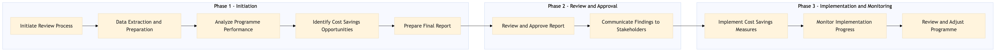

This process document outlines the steps for conducting a Programme Performance Review and Savings Reporting within the TMC Travel Programme Management domain, focusing on Business Travel Policy and Programme.
| Trigger | Scheduled quarterly review or upon significant changes in travel policies or programmes. |
| Outcome | A comprehensive report detailing programme performance metrics, cost savings opportunities, and actionable recommendations is generated and shared with stakeholders. |
| Systems | SAP Concur T2 SAP Concur Expense Amex GBT Neo/Complete AWS SageMaker Snowflake Kafka Salesforce Tableau |

Click to enlarge
| Step | Name & Pain Point | Role | System | Input | Output | KPI | Flags |
|---|---|---|---|---|---|---|---|
| 1.1 | Initiate Review Process Delays in initiating the review process | TMC Travel Programme Manager | SAP Concur T2 | Review schedule, policy changes, programme updates | Review plan and timeline | Timely initiation of review process | ⚠ Exception |
| 1.2 | Data Extraction and Preparation Data quality issues | TMC Data Analyst | SAP Concur T2, Snowflake, Kafka | Travel data from various sources | Cleaned and aggregated travel data | Accuracy of extracted data | ⚠ Exception |
| 1.3 | Analyze Programme Performance Slow processing times | TMC Data Analyst | AWS SageMaker, Tableau | Cleaned travel data | Performance analysis report | Timeliness of performance analysis | ⚠ Exception |
| 1.4 | Identify Cost Savings Opportunities Missed potential savings | TMC Business Analyst | SAP Concur Expense, Amex GBT Neo/Complete | Performance analysis report | Cost savings recommendations | Number of identified cost-saving opportunities | ⚠ Exception |
| 1.5 | Prepare Final Report Inaccurate or incomplete reporting | TMC Travel Programme Manager | Salesforce, Tableau | Performance analysis and cost savings recommendations | Final programme performance review report | Quality of final report | ⚠ Exception |
| 1.6 | Review and Approve Report Delays in decision-making | TMC Senior Management | Salesforce, Tableau | Final programme performance review report | Approved report | Timeliness of approval process | ◆ Decision |
| 1.7 | Communicate Findings to Stakeholders Poor stakeholder engagement | TMC Travel Programme Manager | Salesforce, Tableau | Approved report | Stakeholder communication plan and materials | Effectiveness of stakeholder communication | ⚠ Exception |
| 1.8 | Implement Cost Savings Measures Delays in implementing changes | TMC Business Analyst, TMC Travel Programme Manager | SAP Concur Expense, Amex GBT Neo/Complete | Approved cost savings recommendations | Implementation plan and timeline | Timeliness of implementation | ⚠ Exception |
| 1.9 | Monitor Implementation Progress Inaccurate progress tracking | TMC Data Analyst, TMC Travel Programme Manager | SAP Concur Expense, Snowflake | Implementation plan and timeline | Progress report | Accuracy of implementation monitoring | ⚠ Exception |
| 1.10 | Review and Adjust Programme Ineffective programme changes | TMC Travel Programme Manager, TMC Business Analyst | SAP Concur T2, Snowflake | Progress report | Adjusted programme plan | Effectiveness of programme adjustments | ◆ Decision |